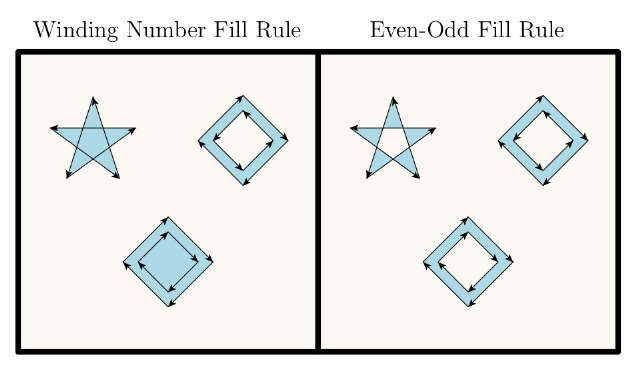

class Tioga::Using_Paths
These are the methods and attributes related to using previously created paths in PDF graphics operations. See also Tutorial::Tutorial::SimpleFigure.
Public Instance Methods
Sets clipping path using the winding number rule (see fill for description).
# File lib/Tioga/Using_Paths.rb, line 151 def clip end
Close and stroke the current path.
# File lib/Tioga/Using_Paths.rb, line 72 def close_and_stroke end
Close, fill, and then stroke the path, using the even-odd rule to determine the region to fill.
# File lib/Tioga/Using_Paths.rb, line 144 def close_eofill_and_stroke end
Close, fill, and then stroke the path, using the nonzero winding number rule to determine the region to fill (see fill).
# File lib/Tioga/Using_Paths.rb, line 137 def close_fill_and_stroke end
Sets clipping path using the even-odd rule (see eofill for description).
# File lib/Tioga/Using_Paths.rb, line 158 def eoclip end
Fill the path, using the even-odd rule to determine the region to fill. The even-odd rule determines the insideness of a point by drawing a ray from that point in any direction and simply counting the number of path segments that cross the ray, regardless of direction. If this number is odd, the point is inside; if even, the point is outside. This yields the same results as the nonzero winding number rule for paths with simple shapes, but produces different results for more complex shapes. See also fill.
# File lib/Tioga/Using_Paths.rb, line 111 def eofill end
Fill and then stroke the path, using the even-odd rule to determine the region to fill (see eofill).
# File lib/Tioga/Using_Paths.rb, line 129 def eofill_and_stroke end
Fill the path, using the nonzero winding number rule to determine the region to fill. Any subpaths that are open are implicitly closed before being filled. The nonzero winding number rule determines whether a given point is inside a path by conceptually drawing a ray from that point to infinity in any direction and then examining the places where a segment of the path crosses the ray. Starting with a count of 0, the rule adds 1 each time a path segment crosses the ray from left to right and subtracts 1 each time a segment crosses from right to left. After counting all the crossings, if the result is 0 then the point is outside the path; otherwise it is inside.
For simple convex paths, the nonzero winding number rule defines the inside and outside as one would intuitively expect. The more interesting cases are those involving complex or self-intersecting paths. For a path consisting of a five-pointed star, drawn with five connected straight line segments intersecting each other, the rule considers the inside to be the entire area enclosed by the star, including the pentagon in the center. For a path composed of nested squares, the area enclosed by both is considered to be inside, provided that both squares are drawn in the same direction. If the squares are drawn in opposite directions, only the area between them is inside, according to the nonzero winding number rule. See also eofill.

# File lib/Tioga/Using_Paths.rb, line 98 def fill end
Fill and then stroke the path, using the nonzero winding number rule to determine the region to fill (see fill). This produces the same result as constructing two identical path objects, painting the first with fill and the second with stroke. Note, however, that the filling and stroking portions of the operation consult different values of several graphics state parameters, such as the current color.
# File lib/Tioga/Using_Paths.rb, line 122 def fill_and_stroke end
Defines the color to use for painting by fill and other non-stroke graphics operations.
# File lib/Tioga/Using_Paths.rb, line 30 def fill_color end
Alias for stroke_color.
# File lib/Tioga/Using_Paths.rb, line 22 def line_color end
Paints a line along the current path. The stroked line follows each straight or curved segment in the path, centered on the segment with sides parallel to it. Each of the path's subpaths is treated separately.
The results of the stroke operator depend on the current settings of various parameters in the graphics state.
-
The width of the stroked line is determined by the current line_width attribute.
-
The color of the line is determined by the current #stroke_color attribute.
-
The line can be painted either solid or with a dash pattern, as specified by the current line_type attribute.
-
If a subpath is open, the unconnected ends are treated according to the current line_cap attribute, which may be
LINE_CAP_BUTT,LINE_CAP_ROUND, orLINE_CAP_SQUARE. -
Wherever two consecutive segments are connected, the joint between them is treated according to the current line_join attribute, which may be
LINE_JOIN_MITER,LINE_JOIN_ROUND, orLINE_JOIN_BEVEL. Mitered joins are also subject to the current miter_limit setting.
NOTE: Points at which unconnected segments happen to meet or intersect receive no special treatment. In particular, connecting the ends of a subpath with an explicit add_point_to_path operator rather than with close_path may result in a messy corner, because line caps will be applied instead of a line join.
If a subpath is degenerate (consists of a single-point closed path or of two or more points at the same coordinates), the stroke operator paints it only if round line caps have been specified, producing a filled circle centered at the single point. If butt or projecting square line caps have been specified, stroke produces no output, because the orientation of the caps would be indeterminate. A single-point open subpath (specified by a trailing move_to_point operator) produces no output.
# File lib/Tioga/Using_Paths.rb, line 65 def stroke end
Defines the color to use for painting by stroke operations.
# File lib/Tioga/Using_Paths.rb, line 14 def stroke_color end